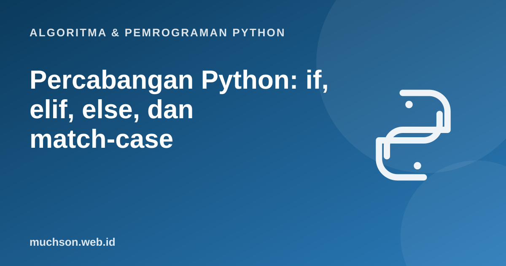

Beranda › Artikel › Algoritma & Pemrograman Python
Algoritma & Pemrograman PythonPercabangan Python: if, elif, else, dan match-case
Percabangan memungkinkan program mengambil keputusan: melakukan sesuatu hanya bila suatu syarat terpenuhi. Di balik kesederhanaannya, ada banyak bug klasik: urutan syarat yang salah, batas yang meleset satu angka, atau kondisi yang tidak mencakup semua kemungkinan. Materi ini membekali Anda cara merancangnya dengan teliti.
Sebaiknya sudah paham: operator perbandingan dan logika

Setelah membaca dan mencoba materi ini, Anda mampu:
- menulis if, if-else, dan if-elif-else dengan indentasi yang benar
- menyusun urutan elif yang tepat dan mencakup semua kasus
- memakai ekspresi kondisional dan match-case
- menjelaskan nilai yang dianggap salah (falsy) di Python
- menguji kondisi pada nilai batas
Bentuk dasar
suhu = 31
if suhu >= 35:
print("Panas sekali")
elif suhu >= 28:
print("Hangat")
elif suhu >= 20:
print("Sejuk")
else:
print("Dingin")Hangat
Blok dalam Python ditentukan oleh indentasi dan diawali tanda titik dua. Menggeser satu baris saja bisa mengubah arti program. Biasakan 4 spasi per tingkat.
Telusuri: pengelompokan nilai
Perhatikan bahwa begitu satu syarat benar, sisanya dilewati.
Mengapa urutan elif penting
Kesalahan klasik: menyusun syarat dari yang paling longgar. Dibandingkan di bawah, nilai 90 seharusnya "A".
def grade_salah(n):
if n >= 65:
return "C" # nilai 90 berhenti di sini
elif n >= 75:
return "B"
elif n >= 85:
return "A"
return "D"
def grade_benar(n):
if n >= 85: return "A"
elif n >= 75: return "B"
elif n >= 65: return "C"
return "D"
print(grade_salah(90), grade_benar(90))C A
Truthiness: apa yang dianggap benar?
Kondisi tidak harus bool. Python menganggap nilai berikut salah (falsy): False, None, 0, 0.0, "", [], (), {}, set(). Selebihnya benar.
for nilai in [0, 1, "", "a", [], [0], None]:
print(repr(nilai), "->", "benar" if nilai else "salah")0 -> salah
1 -> benar
'' -> salah
'a' -> benar
[] -> salah
[0] -> benar
None -> salah
Ekspresi kondisional dan match-case
umur = 17
status = "dewasa" if umur >= 18 else "belum dewasa"
print(status)
def nama_hari(n):
match n:
case 1 | 7:
return "akhir pekan"
case 2 | 3 | 4 | 5 | 6:
return "hari kerja"
case _:
return "tidak valid"
print(nama_hari(7), nama_hari(3), nama_hari(9))belum dewasa
akhir pekan hari kerja tidak valid
Contoh: tahun kabisat
def kabisat(y):
return (y % 4 == 0 and y % 100 != 0) or y % 400 == 0
for y in [1900, 2000, 2023, 2024, 2100]:
print(y, "kabisat" if kabisat(y) else "bukan")1900 bukan
2000 kabisat
2023 bukan
2024 kabisat
2100 bukan
Uji di nilai batas
1. Tulis fungsi tipe_segitiga(a, b, c) yang mengembalikan "sama sisi", "sama kaki", atau "sembarang".
if a == b == c: return "sama sisi"
elif a == b or b == c or a == c: return "sama kaki"
return "sembarang". (Syarat ada-tidaknya segitiga: jumlah dua sisi harus lebih besar dari sisi ketiga, perlu pengecekan terpisah.)2. Apa yang salah dengan if x = 5:?
if x == 5:.3. Tulis kondisi untuk "diskon berlaku bila total belanja minimal 100.000 atau anggota VIP, tetapi bukan pada hari libur".
(total >= 100000 or vip) and not libur. Kurung penting karena and lebih kuat dari or.- if-elif-else menjalankan paling banyak satu cabang: yang pertama benar.
- Urutkan syarat dengan cermat dan uji di nilai batas.
- Falsy: False, None, 0, "", [], (), {}, set().
- Ekspresi kondisional untuk nilai sederhana, match-case untuk pencocokan pola (Python 3.10+).
Tanya jawab
Apakah Python punya switch seperti Java?
Apa bedanya if dan elif?
Bolehkah if di dalam if?
Referensi
- Dokumentasi Python: if Statements
- Dokumentasi Python: match Statements
- PEP 634, Structural Pattern Matching: Specification
- Dokumentasi Python: Truth Value Testing
- Allen B. Downey, Think Python (edisi ke-3), buku teks terbuka